送信する限りは、送信出力（電力）は気になります
アンテナをつなぐとなると、ちゃんと整合が取れているのかどうか、こちらも気になります |
|
通過型電力計
負荷を繋いで、正常の送信出力が出ているかどうか、整合はとれているかを調べます
進行波と反射波の電力を計測し、アンテナ負荷の場合、反射波が少なくなるよう調整することになります
この場合、ＳＷＲ計のほうが手っ取り早く、反射波が少なくなったところで電力を計測でしょうか
送信機の動作確認には、疑似負荷を内蔵した終端電力計が適します |
|
| 代表選選手である ＢＩＲＤ ４３ です |
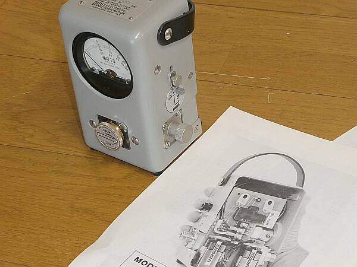
切り替えてＰＥＰ表示をするオプション ＢＩＲＤ ４３００-４００が組み込まれています
使用には、９V電池２個が必要です（もちろん内蔵） |
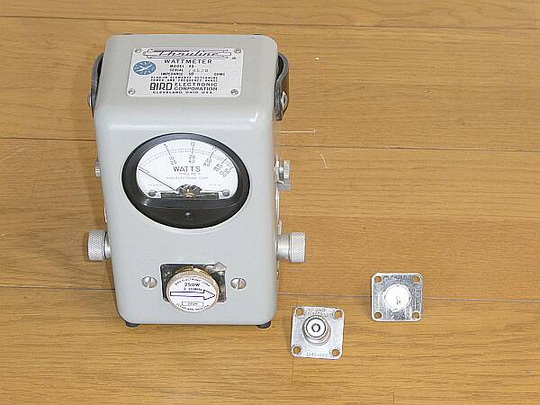
ＵＨＦメス型ＱＣコネクターと一緒に
標準のＮ型コネクタと取り換えてＭ型に対応するもの |
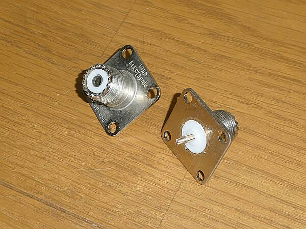
ＵＨＦメス型QCコネクターのアップ |
|
ＥＩＮＳ ＰＨＰ-１０１
ある時期販売されいていたピークパワー（ＰＥＰ）表示を可能とし
進行波、反射波の測定電力からＳＷＲを求めるノモグラフも用意されたモデル
方向性結合器は１～７０ＭＨｚ±０．５ｄＢ、アイソレーションは４０ｄＢ以上というものを採用
１．８～３０ＭＨｚを計測の保証帯域とされています |
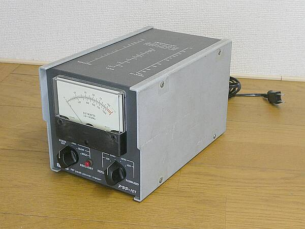 |
天板にＳＷＲノモグラフがプリントしてあります
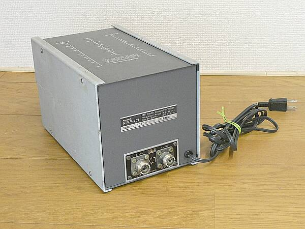 |
このＰＨＰ-１０１は、最大１０００Ｗと１００Ｗの２レンジ
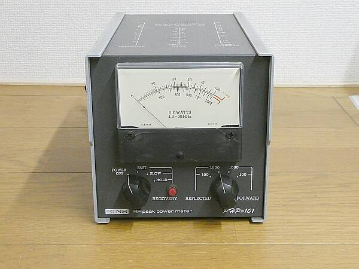 |
|
軍用通過型電力計 ２種構造は同一といっても良さそう
ＡＮ／ＵＲＭ-１２０ |
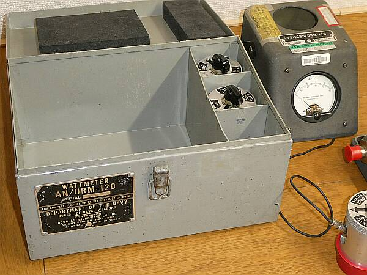 |
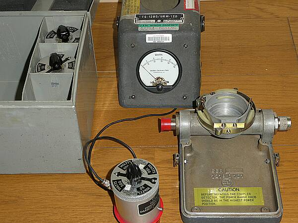
周波数帯ごとに用意された方向性結合器を差し込んで使用します
メータースケールは、方向性結合器についているスイッチで切り替えます
通過の方向(進行波、反射波）は、方向性結合器ごと回します
それにしてもゴツイ構造です
型物あるいは削り出しで作られており、一体いくらしたものか？と |
|
Struthers １２１９-D-００１-G1
基本構造は、上のものと全く同じで、その関係は？
いずれも携行金属ケースに収まっています |
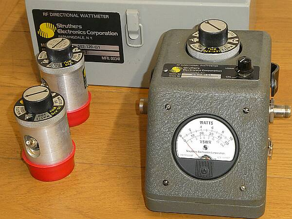 |
方向性結合器ほか操作パネル？のアップです
こちらは、直接ＳＷＲ測定が可能です
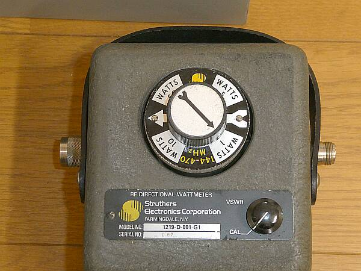 |
操作･表示部とベース部は、パッチン錠で止まっています
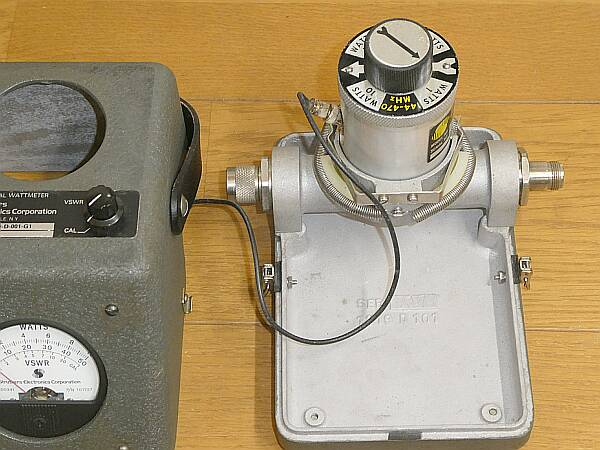 |
方向性結合器の検知部
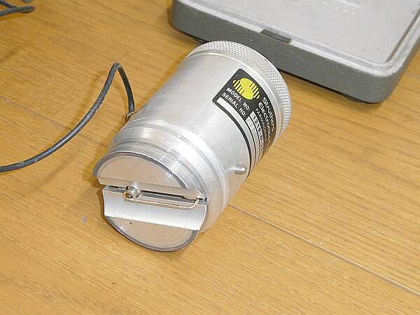 |
|
| 軍用ということから、この際ですからマルチメーター／テスターも登場です |
| ＡＮ／ＵＲＭ-１０５Ｃ |
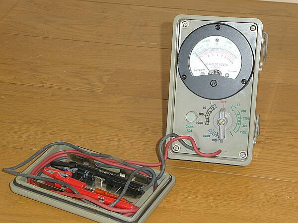 |
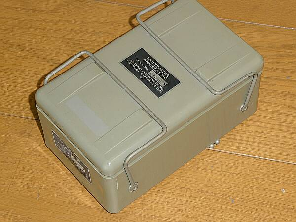
さすがに持ち運びに心配はなさそうなs収納構造です |
|
|
|